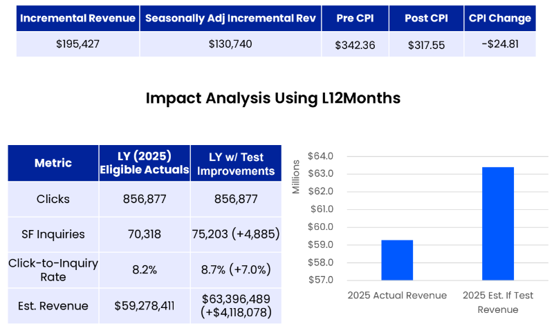

UX & Research
Qualitative and quantitative research — heatmaps, session recordings, surveys, and competitive audits — to uncover friction points and high-value opportunity areas before a single test is built.
CRO Consultant & Experimentation Expert
I turn more visitors into customers through data-driven experimentation.
✓ Results-focused engagement ✓ Every test fully documented ✓ 450% avg program ROI
Proven results with brands including


Services
End-to-end CRO skills: research, experimentation, optimization, and scaling — backed by data and real user insights.
Qualitative and quantitative research — heatmaps, session recordings, surveys, and competitive audits — to uncover friction points and high-value opportunity areas before a single test is built.
Rigorous A/B and multivariate testing with proper statistical controls. Each experiment is hypothesis-driven, QA'd thoroughly, and analyzed to extract both the result and the learning.
Audience-specific experience building to engage targeted segments — by traffic source, demographics, behavior, or purchase intent — for higher relevance and conversion rates.
Turning test results into actionable strategy. Winner documentation, cross-channel insights, executive reporting, and a prioritized roadmap to compound gains over time.
Why work with Jordan
Most optimization is surface-level guesswork. Here's what makes this approach different.
Tests are built on analytics insights, user research, and competitive evidence — not gut feel or best guesses.
Each test feeds the next one. Programs are structured to accelerate learning velocity, not just run isolated experiments in isolation.
Every experiment has a documented hypothesis, clear success metrics, and a post-test readout — win or lose.
Primary KPIs are tied to business outcomes — conversions, revenue, LTV — not vanity engagement metrics that feel good but don't pay.
How it works
A rapid, measurable framework — each sprint delivers validated learnings, and each learning makes the next test smarter.
Analytics audit, user research & competitive analysis to find the highest-impact opportunities
Hypothesis development, wireframes & experiment scoping with clear success metrics
A/B testing, statistical analysis, rollout & documented learnings for the next cycle
Proven results
Real experiments. Real outcomes. A few examples of the revenue impact delivered for major brands.

Healthcare Insurance · UHOne
Strategic product intent capture and checkout experience improvements that drove $8.7M in attributed revenue.
Read the case study →
Healthcare Insurance · UHOne
Modified hero content to appeal to UHOne's ideal customer profile — a patriotic messaging approach that resonated with their target demographic.
Read the case study →
Education · DeVry University
Set up keyword-to-landing-page redirects to better align search intent with content — generating $131K in incremental revenue within 30 days.
Read the case study →Everything you need to know about CRO and working together.
CRO is the process of systematically increasing the percentage of website visitors who take a desired action — purchasing, signing up, or requesting a quote — through data-driven research, experimentation, and iterative A/B testing. Instead of spending more to acquire new traffic, CRO makes your existing traffic work harder.
My deepest experience is in healthcare insurance (UnitedHealthcare, HealthMarkets), education (DeVry), retail and apparel (Aeropostale, Brooks Brothers, Nautica), and health technology (Hear.com). These are industries where CRO improvements translate directly into significant, measurable revenue — and where I've built a strong track record of results.
For experimentation: Optimizely, Adobe Target, and Statsig. For analytics and insights: Google Analytics 4, Adobe Analytics, Domo, Mixpanel, Quantum Metrics, Hotjar, and Mouseflow. I'm tool-agnostic and can adapt to your existing stack.
My programs have delivered an average of 450% program ROI. Specific results include 1061% ROI for UHOne's 2024 optimization program ($8.7M in attributed revenue) and $131K in incremental revenue for DeVry within the first 30 days. ROI varies by site traffic, vertical, and baseline conversion rate — but the directional opportunity is almost always significant.
The process follows a Plan → Build → Run & Analyze cycle. Planning includes an analytics audit, competitive research, roadmapping, and hypothesis development. Building covers creative concepting, test configuration, development, and QA. Running & Analyzing covers launch, monitoring, statistical analysis, and insight reporting that feeds the next cycle. Each iteration compounds learning and impact.
Most clients see validated learnings within 2–4 weeks per test cycle, depending on site traffic volume. Quick-win projects — like the DeVry search redirect optimization — can produce measurable revenue impact within the first 30 days. Larger structural tests and personalization programs typically show compounding results over 60–90 days.
Yes. Personalization is a core service — targeting users by demographics, behavior, traffic source, or purchase intent to deliver tailored experiences. I've run personalization programs for healthcare enrollment, retail product discovery, and lead generation, all designed to serve the right message to the right person at the right moment.
About
I'm a data-driven CRO and digital marketing expert with a track record across healthcare, retail, and education. My background spans conversion rate optimization, A/B experimentation, website personalization, analytics, tagging, and paid media (programmatic native display and affiliate). I'm obsessed with measurable results and building long-term growth systems that compound over time.
University of Miami — BBA, Magna Cum Laude (3.9 GPA) · 7 professional certifications including Google Analytics, Optimizely, and AI for Marketing.
✓ Discovery call at no cost ✓ Results-focused engagement ✓ Full documentation on every test
BBA · Magna Cum Laude · 3.9 GPA
GA4 · Universal Analytics
Section AI · Certified
HubSpot Academy · Coursera